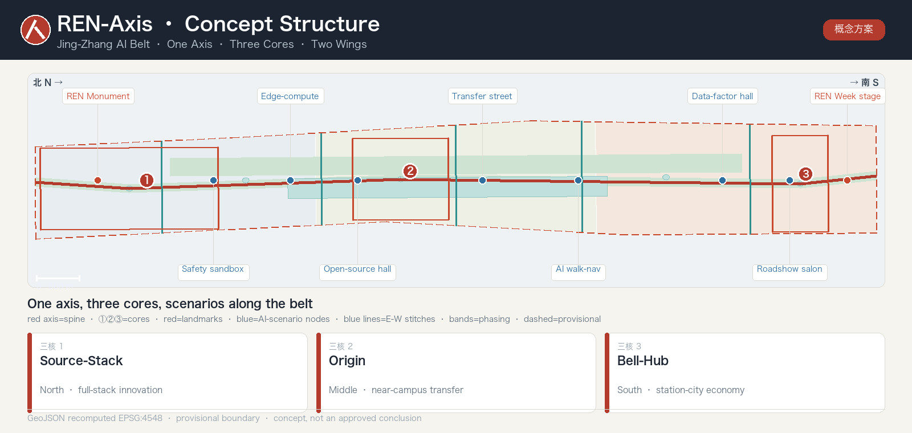
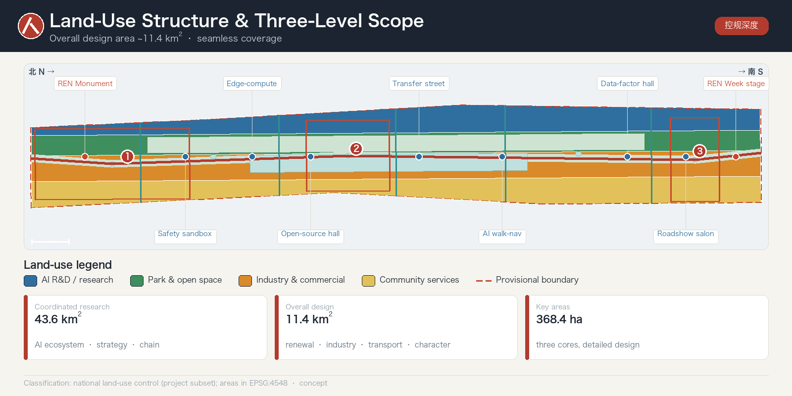
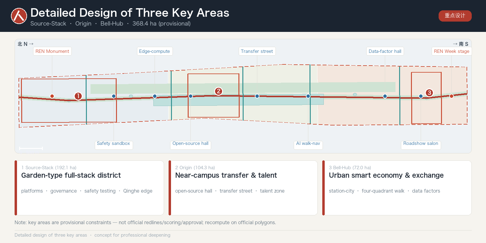
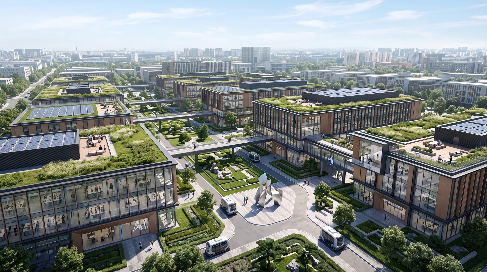
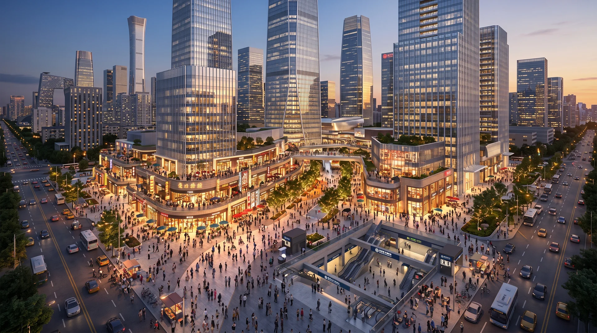
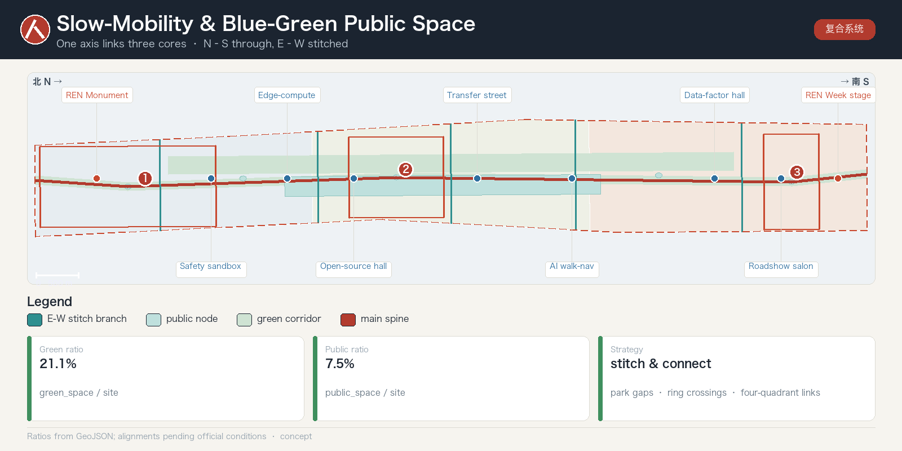

Generated on a provisional boundary for display, self-check and design discussion only — not an official redline, approval, or precise-area basis; recompute on official data.
One Axis Cultural-ecological spine along the Heritage Park, N–S.
Three Cores Source-Stack · Origin · Bell-Hub.
Two Wings Zhongguancun Factor Wing · Xiaoyuehe Scenario Wing, E–W.
总览地图 · Overview map

Overall structure: cultural-ecological spine linking three key areas
三层范围 · Three-level scope
Coordinated 43.6 km²Overall 11.4 km²Key areas 368.4 ha

Land use & three-level scope (seamless coverage)
Land use follows the national land-use control classification (project subset).
重点区域 · Key areas

Source-Stack / Origin / Bell-Hub (provisional)
多模态畅想 · Aspirational renderings
AI-generated concept renderings (Ultron Nano Banana 2) — not site photos, official renderings, or measured data; indicative only.
Heritage Park vitality belt · dusk

Source-Stack · garden innovation district

Bell-Hub · station-city night
交通慢行 · 蓝绿公共空间

Composite slow-mobility & blue-green system
建筑 · 更新项目
Building footprints, retain/renovate/demolish classes and renewal projects are concept suggestions; height, FAR and setback await official regulatory conditions.
Renewal project
Type
JZ-01 Park slow-mobility stitching
Public space / traffic
JZ-03 Near-campus transfer street
Urban renewal
JZ-04 Dazhongsi four-quadrant link
Station integration
AI 场景 · Scenarios
10 scenario cards · 3 industry test scenarios · 5 personas (data-minimized, explainable, human-reviewed)
1 Open-source hall2 Safety sandbox3 Edge-compute node4 AI walk-nav5 Roadshow salon6 Qinghe low-carbon7 Transfer street8 Data-factor hall9 AI life-service street10 REN Week route
核心指标 · Core metrics
Overall design area
11.41 km²
recomputed from site_boundary (EPSG:4548)
Green ratio
21.1 %
green_space / site
Public-space ratio
7.5 %
public_space / site
Floor area ratio
pending official data
needs official regulatory controls
Known metrics recomputed from GeoJSON; unknown metrics flagged pending — no speculative values.
任务覆盖 · Task coverage
The compliance matrix has 26 entries covering all sub-items of announcement tasks 1.3 / 1.4 / 1.5 and agent.1–agent.6, five functions and two wings.